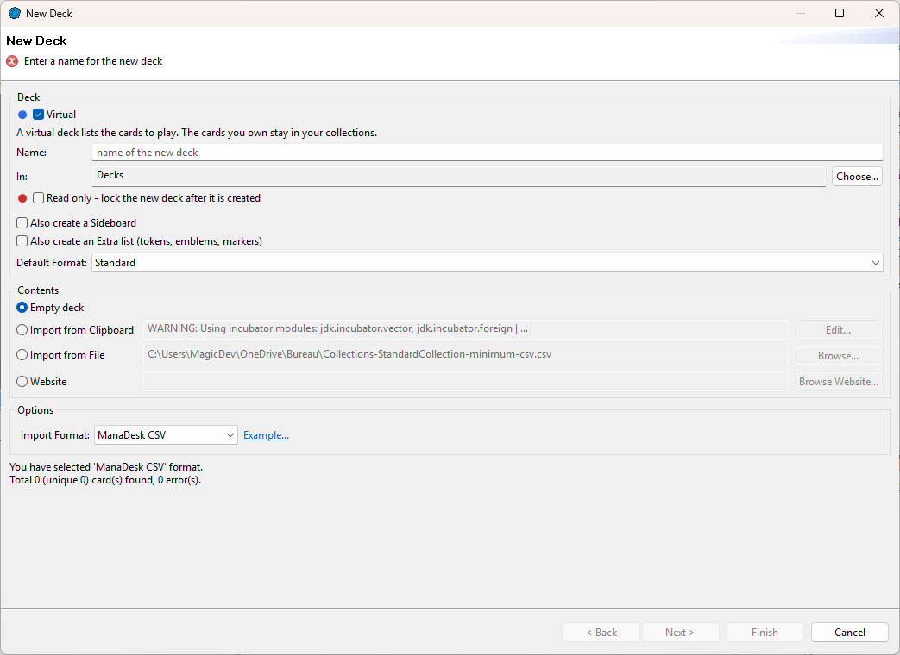

Choose File > New > Deck, or right-click Decks (or one of its
folders) in the Card Navigator and choose New Deck....

Name — the deck's name. When you import from a website, ManaDesk suggests the deck's own name.
In — the folder to create it in; Choose... picks another one.
Virtual — checked by default: the deck lists the cards to play. Uncheck it to create an
owned deck, which holds cards you own. An owned deck is
created empty (Read only and the import choices are greyed) and its sideboard and extra list are owned too.
This can't be changed later.
Default Format — the format the deck's legality is checked against (Standard by default). See
Formats and legality.
Contents:
Empty deck — click Finish, then add cards (see Adding cards).
Import from Clipboard — copy a deck list first (from a website, a forum, a text file...).
Import from File — a deck list or CSV file.
Website — paste the address of a deck page and click Browse Website.... See
Importing from a website.
With an import, click Next to check the list before the deck is created. See
Importing cards.
A virtual deck lists the cards to play. The cards you own stay in your
collections. An owned deck holds cards you own: fill it by moving owned cards in from a Standard or For
Trade collection. See
Decks and collections.
After creating the deck
It opens in its own tab, in the top zone of the window. See The Deck view.
Change its name, format, sideboard and extra list later with Edit Properties... (right-click the
deck in the Card Navigator).